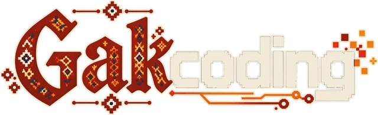
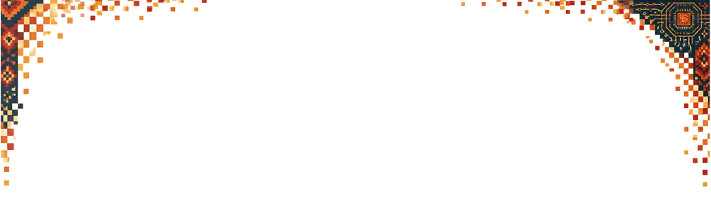

1 Kasım 2026 · ElazığSalonun ekranı senin
Şarkı iste, fotoğraf ya da kısa video gönder. Onaylananlar salondaki ekrana düşer.
Şimdi çalıyor—
Sıradakiler


1 Kasım 2026 · ElazığŞarkı iste, fotoğraf ya da kısa video gönder. Onaylananlar salondaki ekrana düşer.